Spandan Ghodke
I build systems that turn data into something usable — explainable clinical models, satellite super-resolution, and the backends that hold them together. I work across AI & Data Science, ML systems, GenAI, and agentic workflows. Currently a Student Intern at ABB India and studying AI & Data Science at SPPU.
Selected work
Four projects across ML, data, and backend engineering.
-
01
Beyond Resolutions
Smart India Hackathon · Problem Statement 26142
An end-to-end workstation for 4× multispectral satellite super-resolution. A four-band RCAN v2 takes 10 m Sentinel-2 imagery to 2.5 m effective resolution, then SegFormer segmentation and a reference-based quality engine validate that the output holds up scientifically.
-
02
SymptoSense
Explainable clinical diagnostics
A diagnostic platform for heart disease, diabetes, and tumour risk. Clinical inputs become printable, medical-style reports with feature importance and patient-level comparisons — not just a probability.
-
03
Extrovert
Social platform, backend first
A professional social network built from scratch: JWT authentication, profiles, follows, personalised feeds, and real-time messaging over WebSockets, running on FastAPI and PostgreSQL.
-
04
PoolIQ
Urban ride-pooling integration layer
One neutral API for shared rides. PoolIQ matches routes across different apps, splits fares transparently, and benchmarks five dispatch strategies side by side — from scipy's Hungarian solver to Google OR-Tools.
About
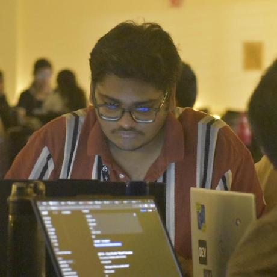
I'm an Artificial Intelligence & Data Science engineering student at Gokhale Education Society's R. H. Sapat College of Engineering, SPPU, graduating in 2028.
My work sits between machine learning and the engineering required to ship it: data pipelines, model evaluation, APIs, and interfaces people can actually use. I care about models that explain themselves and systems that hold up outside a notebook.
Currently I'm a Student Intern at ABB India through the TRI-WIN College Collaboration Program, after a data science internship at Sumago Infotech. I led GDG on Campus at GES College for the 2025–26 tenure, now advise the chapter, serve on the GDG Nashik core team, and serve as International Services Director at Rotaract Club of Nashik Nine Hills.
I've won 30+ hackathons. The pattern is usually the same: scope hard, build the smallest real thing, and finish.
- Based
- Nashik, Maharashtra
- Focus
- ML systems, GenAI, agents
- Studying
- B.E. AI & Data Science
- Status
- Open to internships
Experience
-
Student Intern, Data Science & ML
Sep 2026 — Now
ABB India
Data science and machine learning in an industrial automation context through the TRI-WIN College Collaboration Program.
-
Data Scientist Trainee
Jun 2026 — Sep 2026
Sumago Infotech
Data science and engineering work at an IT services and consulting company in Nashik.

Clubs
-
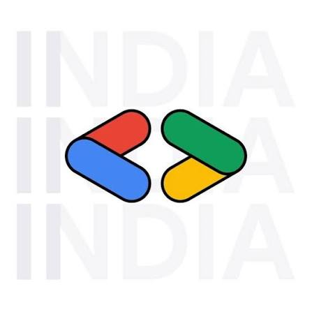
Core Team Member
Jan 2026 — Now
Google Developer Group Nashik
Core team member and technical speaker; delivered 2 sessions, including Build with AI in October 2026.
-
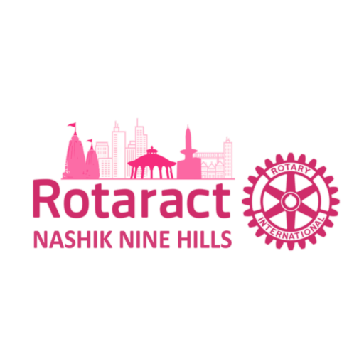
International Services Director
May 2026 — Now
Rotaract Club of Nashik Nine Hills
Lead the club's international services portfolio.
-
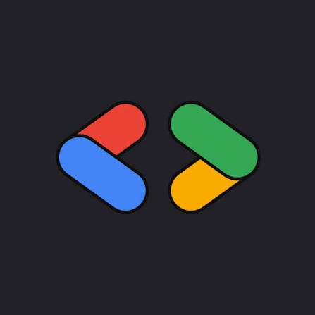
GDG on Campus GESCOE
Jan 2025 — Now
-
Oct 2026 — Now
Advisor
Advising the next team.
-
Aug 2025 — Oct 2026
GDG on Campus Organizer
Led the chapter for the 2025–26 tenure; organized 10+ events.
-
Jan 2025 — Aug 2025
Technical Team Co-Lead
Co-led the chapter's technical team.
-
Education
-
B.E. in Artificial Intelligence & Data Science Engineering
2024 — 2028
Savitribai Phule Pune University · R. H. Sapat College of Engineering and Management, Nashik
Expected graduation 2028.
-
Secondary Education (CBSE)
2022 — 2024
Nashik Cambridge School, Nashik
Completed secondary education under the CBSE board.
Achievements
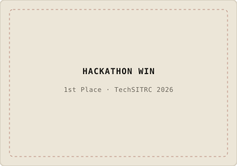
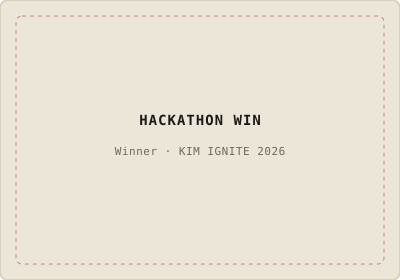
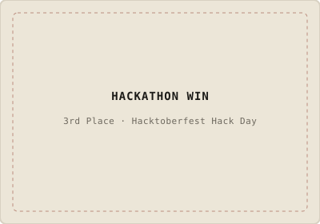
30+
Hackathon wins
National, state, and campus-level competitions — including four consecutive podium finishes with Team 4TheWin. Mostly built in a weekend, usually with a team, always shipped.
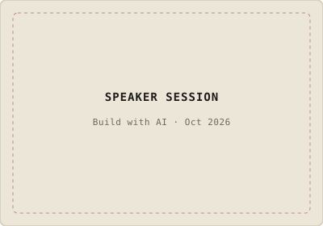
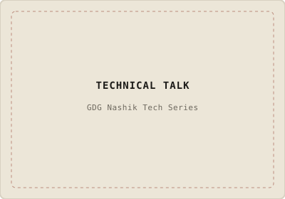
2
Talks & sessions conducted
Invited speaker sessions and hands-on developer workshops on machine learning, generative AI, and real-world system architecture.
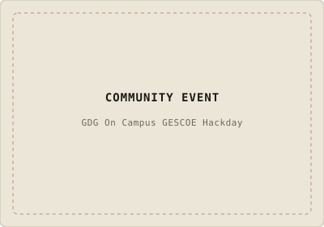
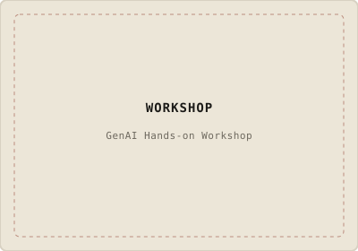
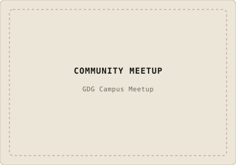
10+
Events organized
Hackathons, bootcamps, and technical community meetups organized and led as GDG on Campus Organizer and GDG Nashik Core Team.
Skills
- Languages
- Python, C, C++, SQL, JavaScript
- ML & data
- NumPy, pandas, scikit-learn, Matplotlib, Seaborn, TensorFlow, PyTorch, deep learning, NLP
- Current focus
- GenAI systems, agentic workflows, evaluation
- Backend
- FastAPI, Django, Flask, PostgreSQL, REST, WebSockets
- Foundations
- Data structures & algorithms, DBMS, OOP
- Tools
- Git, GitHub, Linux, Docker, Supabase
Contact
I'm open to ML, data science, and GenAI internships, research collaborations, and problems worth staying up for.
spandanghodke2006@gmail.com